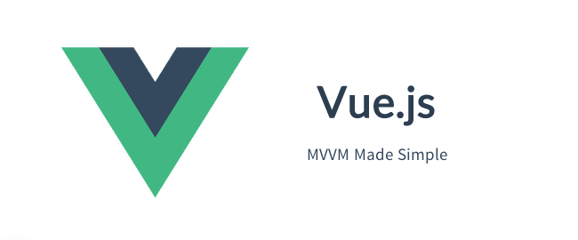

¿Qué es Vue.js?
Vue.js es una librería para construir interfaces web interactivas.
Vue.js proporciona enlace de datos MVVM y un sistema de componentes componibles, con una API simple y flexible.

Este capítulo trata sobre la versión Vue 1.x. Si deseas consultar Vue 2.x, haz clic en los siguientes enlaces.
Tutorial de Vue.js 2.0:http://www.example.com/vue2/vue-tutorial.html
Introducción para principiantes a Vue 2.0:http://www.example.com/w3cnote/vue2-start-coding.html
Tutorial de Vue.js 3.x:https://www.example.com/vue3/vue3-tutorial.html
Características de Vue.js
- Simplicidad:Plantilla HTML + datos JSON, luego crea una instancia de Vue, así de simple.
- Orientado a datos:Rastrea automáticamente las expresiones de plantilla dependientes y las propiedades computadas.
- Basado en componentes:Construye interfaces con componentes desacoplados y reutilizables.
- Ligero:~24kb min+gzip, sin dependencias.
- Rápido:Actualización asíncrona por lotes del DOM, precisa y eficiente.
- Modular:Instálalo con NPM o Bower y se integra perfectamente en tu flujo de trabajo.
Si te gusta lo siguiente, seguro que te encantará Vue.js:
- Mecanismo de enlace de datos extensible
- Objetos nativos como modelos
- API clara y concisa
- Construcción de UI basada en componentes
- Combinable con múltiples librerías ligeras
Instalación de Vue.js
Versión independiente
Descárgalo directamente e inclúyelo con la etiqueta <script>, Vue se registrará como una variable global.
URL de descarga del sitio oficial de Vue.js:http://vuejs.org/guide/installation.html
Podemos descargar directamente la versión de producción desde el sitio oficial y usarla en nuestro proyecto.

O podemos usar la librería CDN de recursos estáticos (versión 1.0.18):
https://lf3-cdn-tos.bytecdntp.com/cdn/expire-1-M/vue/1.0.18/vue.min.js
Instalación con NPM
Se recomienda instalar con NPM al construir aplicaciones grandes con Vue.js:
# 最新稳定版本 $ npm install vue # 最新稳定 CSP 兼容版本 $ npm install vue@csp # 开发版本（直接从 GitHub 安装） $ npm install vuejs/vue#dev
Instalación con Bower
# 最新稳定版本 $ bower install vue
Crear la primera aplicación Vue
A continuación, crearemos la primera aplicación Vue.
Capa View- El código HTML es el siguiente:
<div id="app">
{{ message }}
</div>
Capa Model- El código JavaScript es el siguiente (debe colocarse después del elemento HTML especificado):
new Vue({
el:'#app',
data: {
message:'Hello World!'
}
});
Enlace de datos bidireccional
A continuación, creamos un archivo HTML de la capa view: vueapp.htm, y un archivo de la capa model: vueapp.js. Luego, a través de vue.js (usando la directiva v-model), completamos la lógica subyacente intermedia para lograr el efecto de enlace. Si cambia cualquiera de las capas, la otra también cambiará.

Código del archivo vueapp.htm:
<div id="app">
<p>{{ message }}</p>
<input v-model="message">
</div>
Código del archivo vueapp.js:
new Vue({
el: '#app',
data: {
message: 'Ejemplo!'
}
})
En el ejemplo anterior, {{message}} cambiará según el cambio del cuadro de entrada input. Si no quieres que cambie, puedes modificarlo a:
{{* message }}
También se admiten algunas expresiones simples:
<!-- 字符串连接 -->
{{ message + '官网地址：www.example.com' }}
<!-- 字符串反转 -->
{{ message.split('').reverse().join('') }}
Salida de listas
La salida de listas se logra usandov-foresta directiva (v-for reemplaza a v-repeat en versiones anteriores a 1.0):
<!DOCTYPE html>
<html>
<head>
<meta charset="utf-8">
<title>Ejemplo(example.com)</title>
<script src="https://lf3-cdn-tos.bytecdntp.com/cdn/expire-1-M/vue/1.0.18/vue.min.js"></script>
</head>
<body>
<div id="app">
<ul>
<li v-for="todo in todos">
{{ todo.text }}
</li>
</ul>
</div>
<script>
new Vue({
el: '#app',
data: {
todos: [
{ text: 'Learn JavaScript' },
{ text: 'Learn Vue.js' },
{ text: 'Build Something Awesome' }
]
}
})
</script>
</body>
</html>
Ejemplo de matriz multidimensional
<div id="app">
<ul id="example-2">
<li v-for="item in items">
{{ parentMessage }} - {{ $index }} - {{ item.message }}
</li>
</ul>
</div>
<script>
var example2 = new Vue({
el: '#example-2',
data: {
parentMessage: 'Ejemplo官网',
items: [
{ message: 'www.example.com' },
{ message: 'www.example.com' }
]
}
})
</script>
Condicionales
En plantillas de cadena, como Handlebars, tendríamos que escribir un bloque condicional así:
<!-- Handlebars 模板 -->
{{#if ok}}
<h1>Yes</h1>
{{/if}}
En Vue.js, usamos la directiva v-if para lograr la misma funcionalidad:
<h1 v-if="ok">Yes</h1>
También se puede usar v-else para agregar un bloque "else":
<h1 v-if="ok">Yes</h1> <h1 v-else>No</h1>
Dado que v-if es una directiva, debe añadirse a un elemento. Pero, ¿qué pasa si queremos alternar varios elementos? En ese caso, podemos usar un elemento <template> como elemento contenedor y aplicar v-if sobre él; el resultado final renderizado no lo incluirá.
<template v-if="ok"> <h1>Title</h1> <p>Paragraph 1</p> <p>Paragraph 2</p> </template>
v-show
v-show funciona de manera similar a v-if, la diferencia es que el elemento con v-show siempre se renderiza y permanece en el DOM, y v-show no admite la etiqueta <template>.
<h1 v-show="ok">Hello!</h1>
Filtros
Al igual que la tubería en Linux, vue.js también usa |:
{{message | uppercase}}
Así podrás generar la versión en mayúsculas de message; los filtros también se pueden encadenar:
{{message | reverse | uppercase}}
Aquí reverse no es un filtro incorporado; podemos personalizarlo con Vue.filter:
Vue.filter('reverse', function (value) {
return value.split('').reverse().join('')
})
Documentación de referencia
Sitio oficial:http://vuejs.org/
Documentación oficial:http://cn.vuejs.org/examples/